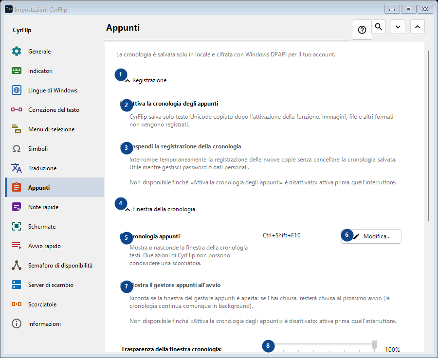
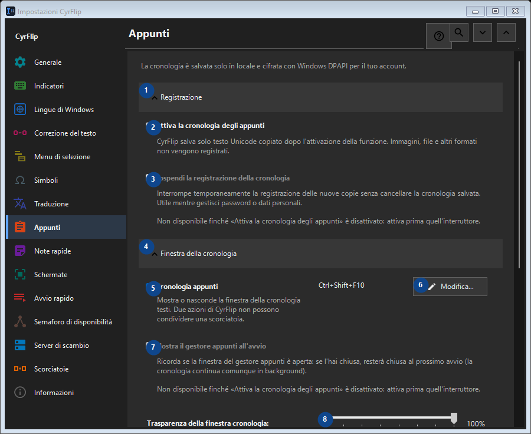

Appunti
A cosa serve
La cronologia è salvata solo in locale e cifrata con Windows DPAPI per il tuo account.


Ordine delle operazioni
Le impostazioni si applicano subito. Non serve un ordine preciso; usa i gruppi qui sotto.
Elementi
1. Registrazione
Usa questo comando per l’azione indicata. Leggi ogni richiesta di conferma prima di accettare.
Le tue scorciatoie2. Attiva la cronologia degli appunti
CyrFlip salva solo testo Unicode copiato dopo l'attivazione della funzione. Immagini, file e altri formati non vengono registrati.
Le tue scorciatoie3. Sospendi la registrazione della cronologia
Non disponibile finché «Attiva la cronologia degli appunti» è disattivato: attiva prima quell'interruttore. Questo elemento non è disponibile. Attiva prima la funzione o seleziona una voce.
Le tue scorciatoie4. Finestra della cronologia
Usa questo comando per l’azione indicata. Leggi ogni richiesta di conferma prima di accettare.
Le tue scorciatoie5. Cronologia appunti
Mostra o nasconde la finestra della cronologia testi. Due azioni di CyrFlip non possono condividere una scorciatoia.
Le tue scorciatoie6. Modifica - Cronologia appunti
Usa questo comando per l’azione indicata. Leggi ogni richiesta di conferma prima di accettare.
Le tue scorciatoie7. Mostra il gestore appunti all'avvio
Non disponibile finché «Attiva la cronologia degli appunti» è disattivato: attiva prima quell'interruttore. Questo elemento non è disponibile. Attiva prima la funzione o seleziona una voce.
Le tue scorciatoie8. Trasparenza della finestra cronologia
Non disponibile finché «Attiva la cronologia degli appunti» è disattivato: attiva prima quell'interruttore. Questo elemento non è disponibile. Attiva prima la funzione o seleziona una voce.
Le tue scorciatoie9. Cerca nella cronologia
Apre una finestra separata per cercare un frammento di testo. Servono almeno tre caratteri.
Le tue scorciatoie10. Pulizia
Usa questo comando per l’azione indicata. Leggi ogni richiesta di conferma prima di accettare.
Le tue scorciatoie11. Cancella tutta la cronologia
Elimina tutte le voci dalla memoria e dal file locale cifrato. L'operazione non è reversibile.
Le tue scorciatoie12. Trasferimento su un altro computer
Usa questo comando per l’azione indicata. Leggi ogni richiesta di conferma prima di accettare.
Le tue scorciatoie13. Esporta...
Un unico file di testo in chiaro con le note e la cronologia appunti scelta: si legge in qualsiasi editor o sul telefono e si importa in CyrFlip su un altro computer. Il file non è cifrato. L'importazione mostra cosa verrà aggiunto e non elimina nulla.
Le tue scorciatoie14. Importa...
Usa questo comando per l’azione indicata. Leggi ogni richiesta di conferma prima di accettare.
Le tue scorciatoie